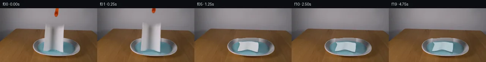

![首帧]()

Round 00
2026-11-05T13:55:26.459784+00:00像素候选变化代码 +249/−0inspection 更新
pixels cd6bc5638e65a5c5 · code 1fea6b052502b3b7
查看本轮 generate.py 真实 diff
--- previous/generate.py
+++ current/generate.py
@@ -0,0 +1,249 @@
+"""Single-source pixel continuation, with a hand-modeled deforming cloth surface."""
+from pathlib import Path
+import math
+import numpy as np
+from PIL import Image, ImageDraw, ImageFilter
+import cv2
+from scipy.ndimage import gaussian_filter
+from artifact_io import save
+
+ROOT = Path(__file__).resolve().parent
+SOURCE = np.asarray(Image.open(ROOT / 'first_frame.png').convert('RGB'))
+H, W = SOURCE.shape[:2]
+S = 4
+
+def smooth(x):
+ x = np.clip(x, 0, 1)
+ return x*x*(3-2*x)
+
+def bilinear(im, x, y):
+ return cv2.remap(im.astype(np.float32), np.asarray(x, np.float32), np.asarray(y, np.float32), cv2.INTER_LINEAR, borderMode=cv2.BORDER_REPLICATE)
+
+# A local matte identifies the obscured background, not an external mask.
+poly = [(119,39),(129,43),(143,46),(157,44),(169,40),(169,63),(168,88),(167,119),(155,116),(145,113),(133,114),(125,116),(112,117),(115,93),(117,65)]
+pm = Image.new('L',(W,H)); ImageDraw.Draw(pm).polygon(poly,fill=255)
+removal = cv2.dilate(np.array(pm),np.ones((3,3),np.uint8)) / 255.
+removal = gaussian_filter(removal, .75)
+Y, X = np.mgrid[:H,:W].astype(float)
+
+# Rebuild only the region formerly covered by paper. Material colors are sampled
+# at equal normalized height on the unobstructed sides of the source dish.
+bg = SOURCE.astype(float).copy()
+rebuild = bg.copy()
+xc, yo, rx, ry = 149., 104., 62., 25.5
+xi, yi, rxi, ryi = 149., 106.5, 49.6, 18.6
+outer_h = ry*np.sqrt(np.maximum(0,1-((X-xc)/rx)**2))
+inner_h = ryi*np.sqrt(np.maximum(0,1-((X-xi)/rxi)**2))
+outer_top = yo-outer_h
+inner_top = yi-inner_h
+outer_r = ((X-xc)/rx)**2+((Y-yo)/ry)**2
+inner_r = ((X-xi)/rxi)**2+((Y-yi)/ryi)**2
+liquid = smooth((1-inner_r)*20)
+for y in range(36,122):
+ for x in range(109,174):
+ # Smooth gray wall, then a continuation of adjacent table grain.
+ q = np.clip((x-110)/64,0,1)
+ wall = SOURCE[y,110]*(1-q)+SOURCE[y,174]*q
+ wall_edge = 55.7+(x-110)*.042
+ if y <= wall_edge-.6:
+ color=wall
+ else:
+ # Copy nearby clean wood and match its low-frequency row color.
+ sx = x-59
+ rowcol = SOURCE[y,110]*(1-q)+SOURCE[y,174]*q
+ grain = SOURCE[y,sx].astype(float)-gaussian_filter(SOURCE.astype(float), (1.5,3,0))[y,sx]
+ color=rowcol+grain*.8
+ if y<wall_edge+.6:
+ color=wall*(1-smooth((y-wall_edge+.6)/1.2))+color*smooth((y-wall_edge+.6)/1.2)
+ if outer_r[y,x]<1.03 and y>75:
+ k=np.clip((y-outer_top[y,x])/max(1,inner_top[y,x]-outer_top[y,x]),0,1)
+ cols=[]
+ for sx in [108.,179.]:
+ sy0=yo-ry*math.sqrt(1-((sx-xc)/rx)**2)
+ sy1=yi-ryi*math.sqrt(1-((sx-xi)/rxi)**2)
+ cols.append(bilinear(SOURCE,np.array([[sx]]),np.array([[sy0+k*(sy1-sy0)]]))[0,0])
+ rimcol=cols[0]*(1-q)+cols[1]*q
+ # The narrow top lip catches light in the original dish.
+ lip=math.exp(-((y-outer_top[y,x]-.25)/.58)**2)
+ rimcol=rimcol*(1-.18*lip)+np.array([199,194,198])*.18*lip
+ ar=float(smooth((1.03-outer_r[y,x])*35))
+ color=color*(1-ar)+rimcol*ar
+ if inner_r[y,x]<1.04:
+ vh=(y-yi)/max(inner_h[y,x],1)
+ cols=[]
+ for sx in [109.,178.]:
+ hh=ryi*math.sqrt(1-((sx-xi)/rxi)**2)
+ cols.append(bilinear(SOURCE,np.array([[sx]]),np.array([[yi+vh*hh]]))[0,0])
+ watercolor=cols[0]*(1-q)+cols[1]*q
+ ar=float(smooth((1.04-inner_r[y,x])*18))
+ color=color*(1-ar)+watercolor*ar
+ rebuild[y,x]=color
+bg = bg*(1-removal[...,None])+rebuild*removal[...,None]
+# The visible grabber is extracted and its wall background locally restored.
+tool_mask=np.zeros((H,W),np.uint8)
+tool_mask[:26,139:158]=((SOURCE[:26,139:158,0].astype(int)-SOURCE[:26,139:158,1].astype(int)>27)&(SOURCE[:26,139:158,0]>100))*255
+tool_mask=cv2.dilate(tool_mask,np.ones((3,3),np.uint8))
+tool_mask=gaussian_filter(tool_mask.astype(float)/255,.45)
+clean_tool=cv2.inpaint(SOURCE,np.uint8(tool_mask>0.02)*255,4,cv2.INPAINT_TELEA)
… diff truncated; 162 more lines …